Conductor 0.87.6 reference on the left. Built OpenConductor on the right.
Local executable/root/scrollback rows are in scope. Existing cloud-only preferences are deferred and not scored as gaps.
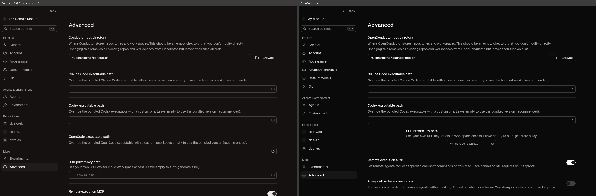
Reference ev_9ea4a9daf7ad3f00517570e1fc5ca81801953393c4761ce14fda53a440f2f035
OpenConductor ev_b85392dcd076bea4827243419dbcd2fc652c37fbad321572dc4a7589da0ccef6
Comparison ev_27684fd4db92c1814e142c57478ae3d9d47df926d90aa7201be59098e6395b13Local Claude Code tab. Cursor/OpenCode were intentionally removed; Reason tab is an OpenConductor extension. Authentication here is a fixture, not a live login.
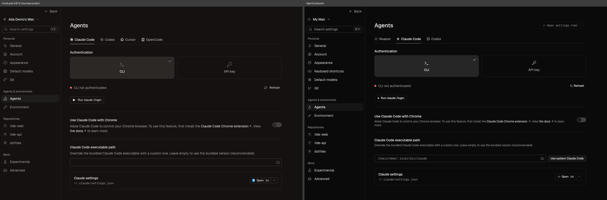
Reference ev_810747dc0b625beb48337a469b97317fe9f66eb4e92185b02e944e69901eb3dc
OpenConductor ev_4a2d93ae0c21602e43cea99a1d538a3adbf80bd952949e896eb165eee2e95771
Comparison ev_694ec31d8d62e00efae630da92c427420f207a297f22ae8d7e94323236769551Local Codex tab. The reference fixture selects the legacy two-card CLI variant and returns an invalid account shape. OpenConductor retains the three-card design from PR 689. This pair is partial evidence, not an exact-match verdict or live authentication check.
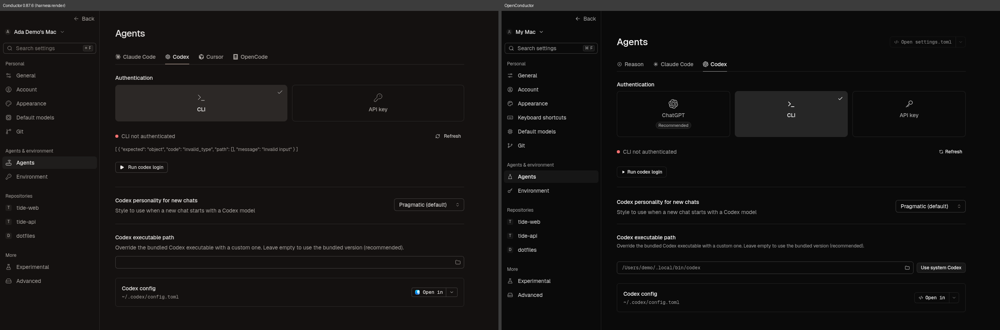
Reference ev_a824eb6c72b2f4b67c74f8e1d23b55192d5354d7cbbabfd8b86f0d9e07d645c6
OpenConductor ev_87d6b08c5ca6b52b83afca6379f81f77efd88c254d17a025b41e511011bffcf6
Comparison ev_e76e262a3e063ccb7f2fb754a6dcddb1a512e6412f4a03427c122f4b54f3eb89Palette option moved below the reference rows; spacing and preview now follow the reference. Syntax theme implementation and Neutral palette differ.
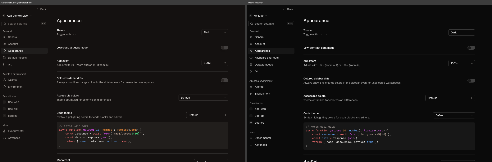
Reference ev_270c2c996bbab993d029852f4d8fb49ceaee1d4d680b5486598195db8fa0cd28
OpenConductor ev_fff46517651b60ebf21d8c15520a0d2983fde941d66063caaea69273ee482f64
Comparison ev_d37557660c9eeae34c7b8ab0a32d8558187dc8fccd1bf969f594323cc2563712Lower appearance controls; OpenConductor keeps its palette extension after the reference rows.
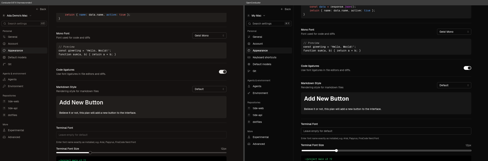
Reference ev_d29038041cfaa12075e1bd6d347240f1f844a042aa93ebb886cbbdbe93e3aeff
OpenConductor ev_8d04ee2b5ae971c26ff012b3577b30a6603fe637747fb39aa81e3deea04f37a4
Comparison ev_c6644ed87078c85d6d4997043cf99c337574cc5c8f58f0053287273f88a499a0Local environment page; empty invented values.
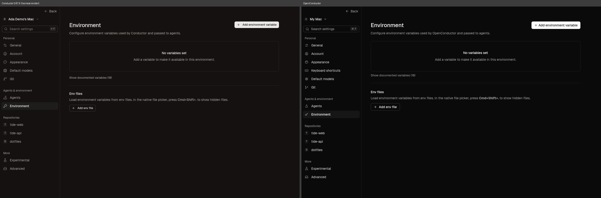
Reference ev_30bdf773d2c7e21336cb13c977602a862a19d62c658dcdc6b2637a82593bb27b
OpenConductor ev_746c45c68328058f376d8b902a937a9a38c3fffeefeb2a488da1a2e847f0fc51
Comparison ev_217bfcaf4b12e85ca326cdc63b0b7e51aee7f5c86d8c2634f0418a0178f43202Local experimental preferences. Cloud UI is deferred behind the separate off-by-default gate change.
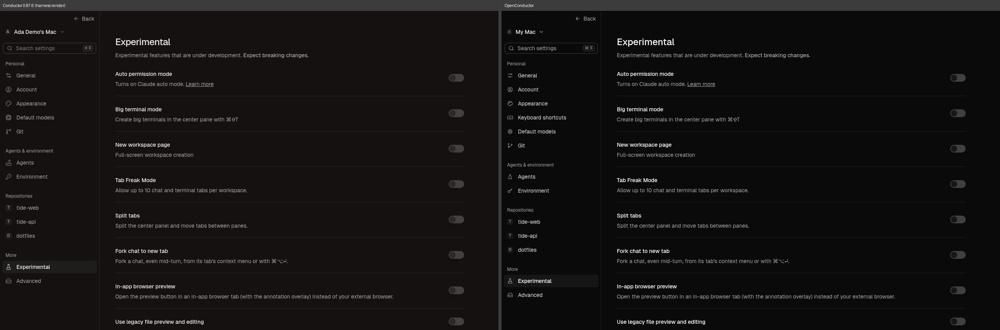
Reference ev_736b0f4c500d0e21e02f9b089145518d47531bd453d9bc9c3aaadbb96d02762a
OpenConductor ev_78476cd2a47fd674ae7ecf85240ef603011f3dd59c8d832e4a5b1246b3488c91
Comparison ev_a737843376b0219d5bc27e58611b4529d9341bd5184078920e5554cdf90c5157Main content aligned. Neutral palette, keyboard-shortcuts navigation and account label are deliberate OpenConductor differences.
Reference ev_a614731b60366f3c177c87af14da52bedf4718eca3034fa9d8d7361708d0ef49
OpenConductor ev_a8f0fb88bed8e6c9f21f3c2fa32caa344bd7f19e0b155899610a1d7a9da968c4
Comparison ev_7f5020500e7492e2a29ca83a52731e4c5231d88688cd354bd3f365bb7bd146e9Local Git preferences. Conductor cloud identity controls are outside scope.
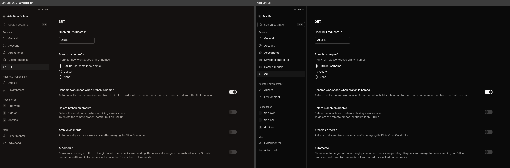
Reference ev_d75663534dc94731b59d86f9d2f9dd9d67977b0005914b4d6b71e476b64fa7a0
OpenConductor ev_7a0c9df38543e0e9a0252f646d63e830e7a4b94584088eba0caba18bf2327f9a
Comparison ev_1b312c2cefda3e71b1a1633a6f97ee5014f9e02bf7855829b3634bb2e226e723Only the supported local agents and Reason are shown. Removed providers are not missing features.
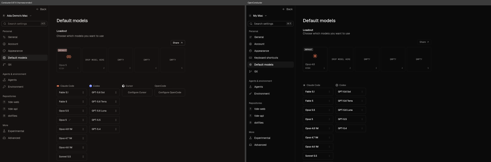
Reference ev_576cf1636fe9458beac3a07308731e09957cf109b891e744c9b8e0103716e0da
OpenConductor ev_1953a90cb46d49cc52422a7f87ccda1b22e9e3657aacdd8cd21ff7f563a049a3
Comparison ev_a309c0a9a6430333688d7c7140f7f1d1ca6ead5c79d9887896410357f98620f4Local action preferences and instructions; fixture-only backend state.
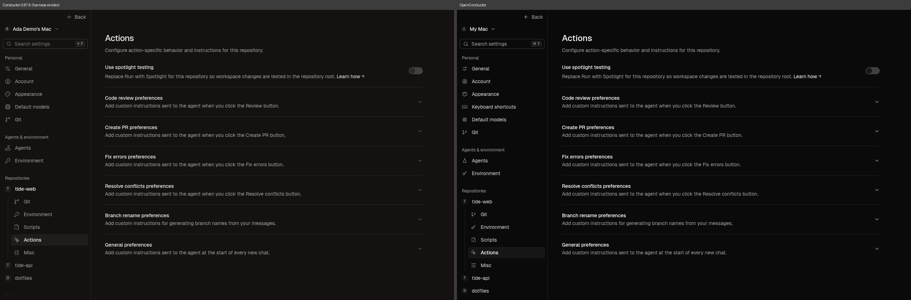
Reference ev_2f2528fc7917000a9f189a5b7b690164a07d45db6da8f9772fd93492e09ef676
OpenConductor ev_ff7f441455466dac37edf7776d867e746c8338f9ad60ee565420b63dd1e54b47
Comparison ev_acb6e8c5fbf1dd8159559b1d9dce9350d5b7fefaf3c9d2aaa64ca5aede6d55c8Repository-local environment presentation; no actual values or user files are read.
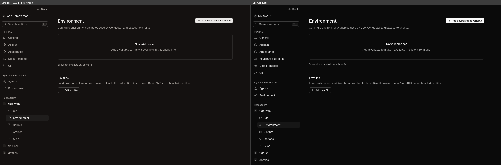
Reference ev_b48c3214d3f3707bb2cd5ae2c0fab24fda7c13686ad14ae38fb85e59b0d56aea
OpenConductor ev_2ab1fddb2a0018295cbd5314056c1f7c4846b69fad12ec931f9ec4842f1900eb
Comparison ev_46341b57912d293b22ee8efc4b7a64e3a888a486045d158d31dde77f72cf7520Repository-local Git preferences, with invented fixture state.
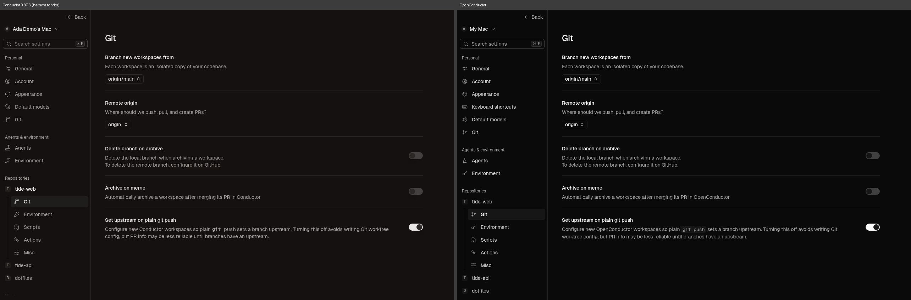
Reference ev_c74d4d4bb50b2650e75dcdecafaf602917d7b2bd73f9e8dd709f59fa9e84bc76
OpenConductor ev_9e07e58c18c79eaa77dcd042e391b79cfa7959e3ad47ceb3c56b7245689d3b98
Comparison ev_5b581a34dc04cb06007c7ef64d79bfd064181024d0b0dbf91803be62108312d0Repository paths are invented and intentionally differ between app identities. No removal or filesystem write is performed.
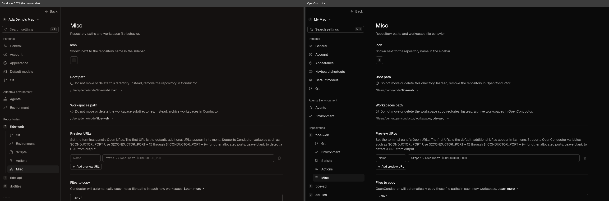
Reference ev_67b82ddd2c02fed06b8b522d0ef5798bed6cf6c18b2289e157f8f8ed4f38ad32
OpenConductor ev_57e1e0c627e5d785fe61cb7060e527e9e704fd42d4e03967914380d6967da528
Comparison ev_e6f2e76fa281d744fa6fa01dcf29d594db7ef114194a220b74a4c40acc61671cEmpty local scripts configuration. Script execution is not part of this capture.
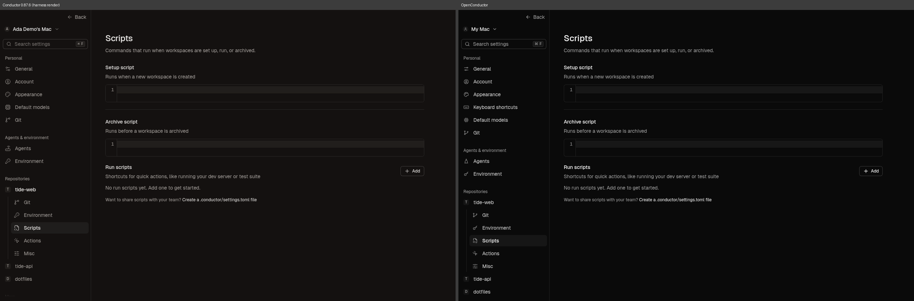
Reference ev_ff3a5c1d40ad53205490067970b8e300bfb0f14d976e43f09433369d8efb8c2e
OpenConductor ev_c2c355000c8f2b85dc016bf06deef42a740115363793d2e1dc938fefe99d2e9e
Comparison ev_6141816a9f4336ad4b840251dc6ac9ea024049cb1d7b7bba547707ad980f88ceHeader, icons, preset spacing and Add custom command aligned. Local preset commands are shown only; no agent is started.
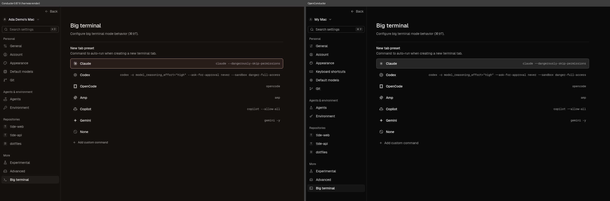
Reference ev_31058ab1eeff48f2bc4a3557214e1840c41e1bce1a22db6850bb5a04dcddfe73
OpenConductor ev_14fdf8dcc5adc237d1d653421237bbc4dc3b17f78509f012cfda874967bc4fc7
Comparison ev_7255009e325fb1db8f93ba13d16d0e9b9698b92a48b4987efb374e175c7fd278